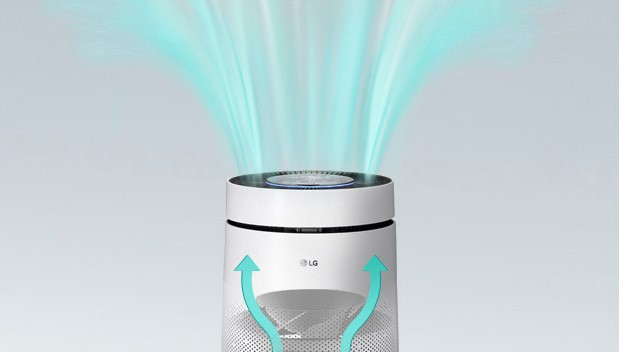
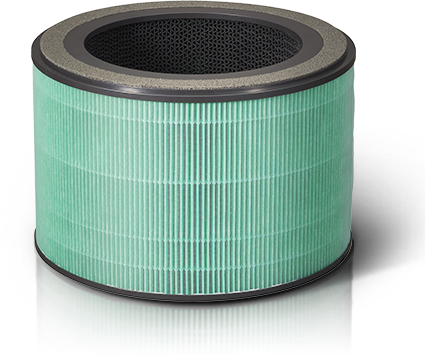
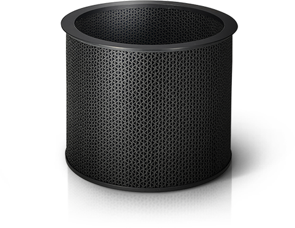
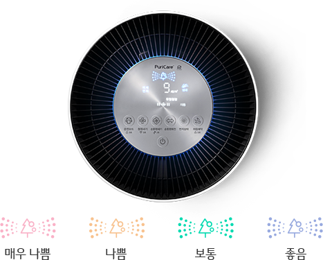
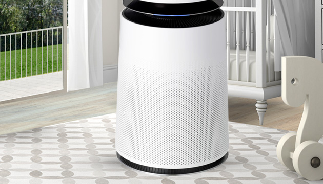

강력한 청정
NASA에서 개발한 항공기 팬 기술이 적용되어
더 넓어진 청정 면적으로 360˚ 모든 방향에서 먼지를 흡입하고
초미세먼지까지 제거하여 어디에 두어도
빈틈없이 청정바람을 보내줍니다.

토탈 알러지/집진 플러스 필터
토탈 알러지/집진 플러스 필터
토탈 알러지 집진/플러스 필터를 적용하여,
0.01㎛의 극초미세먼지까지 99.99% 이상 제거합니다.

토탈 유해가스 필터
스모그 원인물질(SO2, NO2), 새집증후군 물질
(톨루엔, 포름알데히드), 생활냄새까지 잡아줍니다.

공기청정 디스플레이
미세먼지, 초미세먼지, 극초미세먼지 농도를
상세하게 확인할 수 있고, 냄새, 먼지를 종합한
종합청정도를 4단계로 보여줍니다.

아기케어
아기의 생활 공간에 맞춰
하단으로 공기를 집중하여 안심청정존을 형성합니다.